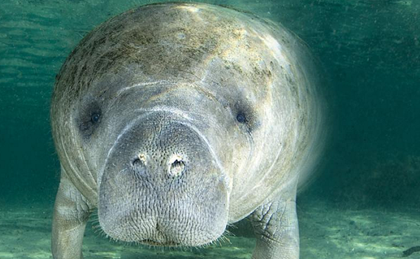

Los manatíes son mamíferos acuáticos grandes y herbívoros que habitan en aguas costeras, estuarios y ríos de regiones tropicales y subtropicales. Se caracterizan por sus cuerpos voluminosos, aletas en forma de remo y una cola aplanada. Son conocidos por ser animales amigables y pacíficos. Los manatíes se alimentan principalmente de plantas acuáticas y pasan la mayor parte del tiempo en el agua, emergiendo periódicamente para respirar aire. Son criaturas en peligro de extinción debido a la pérdida de hábitat, la caza y las colisiones con embarcaciones.
Los manatíes pertenecen al orden Sirenia y se dividen en tres especies: el manatí antillano, el manatí de África occidental y el dugongo. Su estructura social es generalmente solitaria o en pequeños grupos. Tienen una dieta principalmente vegetariana, compuesta por algas, hierbas acuáticas y plantas costeras. Estos animales juegan un papel importante en los ecosistemas acuáticos al mantener la salud de los pastos marinos y al ser indicadores de la salud del medio ambiente acuático. Su reproducción es lenta, con una gestación de aproximadamente un año y una cría por parto.
